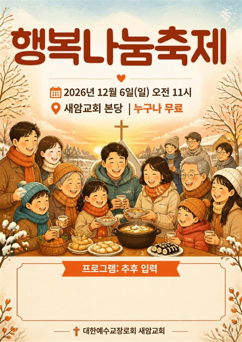

읽고, 묵상하고,
삶으로 남기다
이재선 목사가 말씀을 전하고, 시를 쓰고, 생각을 적고, 책을 읽은 기록 1,870편을 한곳에 모았습니다.
독서는 취미가 아닙니다. 특기이며, 특기를 넘어 주특기가 됩니다. 독서로 나의 세계를 바꾸기를 희망하며……
-
삼상24장
옷자락을 베고 마음에 찔리니라
다윗은 어떻게 자신을 그토록 괴롭히고 죽이려 하는 사울의 옷자락만을 베고도 오히려 마음이 찔렸을까요? 우리는 나를 괴롭히는 사람에 대하여 참지…
-
마21장
나귀 새끼를 타신 다윗의 자손
고통을 아는 영혼 환란은 성장의 법칙이요 우리의 신앙은 이 세계의 폭풍우와 긴장 속에서 만들어진다. 뷔엔나의 어떤 유명한 음악 교사가 자기 문하…
-
왕상1-18장
두 번씩이나 나타나셨다
많은 것에서 오는 교만 농촌에 교회가 세워지고 예수 믿는 사람들의 생활을 본 그 동네 유지 한 사람이 예수를 믿기로 작정하고 나온지 얼마 지나지…
-
사사기7장
보리떡 한 덩이 기드온
기드온은 300용사로 유명합니다. 300이라는 영화와는 다른 인물입니다. 아니 전혀 다른 스토리입니다. 영화 **<300>**은 기원전 480년…
-
왕상7-10장
만민이 기도하는 집
교회는 구원의 우물 예수님께서 부활하신 후에는 그 육신의 몸이 신령한 몸으로 변했습니다. 그 신령한 몸이 40일 동안 제자들과 같이 있다가 마지…
-
민14장
제멋대로 이스라엘
하나님이 중요시 여기는 것은 무엇일까요? 순종?, 타이밍?, 방향?, 중심? 오늘 본문은 여러 것을 시사하고 있습니다. 1. 정탐군의 정확한 보…
구약 39권 · 성경 책장
신약 27권
66권 가운데 58권을 설교했습니다. 책등이 높을수록 글이 많고, 책을 누르면 그 권의 설교 목록이 열립니다.
들으면서 읽는 성경
채널 바로가기 · 영상 43편 →창세기부터 요한계시록까지 성경 66권 전 장을 음악으로 만드는 통독 프로젝트입니다. 자막의 말씀을 따라 읽거나, 큐티와 기도 시간에 틀어 두고 들을 수 있습니다.


네 권의 시집
시 전체 194편 →자연시
50편자연을 노래하다
- 가을 나무짓 푸름 옷 벗고 잿빛 낙엽 외투로 갈아입은 가을 나무 외출복 벗고 잠옷 입듯 그렇…
- 단풍(丹楓)북풍(北風) 대낮 아직 열기 머금은 대지(大地) 중병(重病) 걸려 숨 떨어진 입새…
- 매미초가을 한 풀 꺽인 매미의 울음 ‘나 오늘 밤이 마지막이라오’ ‘내 하소연 들어 주…
생활시
67편삶의 자리에서
- 주고 잡아서기뚱기뚱 꼬무락 꼬무락 어무이의 서툰 손놀림 아들 주고 잡아 씨암탉 다듬고 마늘 듬…
- 아버지 자리아버지가 앉던 식탁에 앉으니 어무이 차려 내 받은 밥상 아버지 자리 소파 앉아 쉬던…
- 친구더워 옷 벗어 어깨 맨 것 아니오 비 두려워 우산 집어든 것 아니라니까 손 허전해…
- 42
몰랐습니다
나는 늘 바른 말을 했습니다. 진취적이고 적극적이었습니다. 좋은 의견을 냈고, 창의적인 생각을 앞서 말했습니다. 아이디어 뱅크…
- 42
사역자의 자세
우리는 희생하면 안 된다. 드려야 한다. 사역자와 목사는 희생이나 헌신을 하는 것이 아니다. 주님의 십자가로 구속받은 내 몸과…
- 41
문학가의 자세
2012년 9월 14일 문학가들이 작품에 자신의 생각을 넣지 않는다고 한다 나는 나의 작품에 내 생각을 강하게 넣는다 집요하게…
- 40
작은 교회들의 생존법
2012년 9월 13일(목) 작은 교회들이 사는 법은 큰 교회들의 반대로 하면 된다. -돈 주고 방송 출현하지 않기 -돈 주고…
- 39
두려워하라
두려워하지는 말되 두려움 자체를 피하지는 말라. 두려움은 믿음을 낳는다. 큰 두려움은 큰 믿음을 낳고 작은 두려움은 작은 믿음…
- 38
1월에
오색찬란 단풍 즐기는 새 혹한의 겨울 준비 한창인 나무 한겨울 한파에도 벌써 싹틔울 준비 옷 다 벗어 던지고 바람 적게 맞으려…
읽은 책, 남긴 생각
독후감 전체 381편 →설교에 쓰는 이야기
예화 전체 38편 →만든 것들
행복나눔축제 초대장
2026 전도집회 · 새암교회 본당

행복나눔축제 포스터
A3 인쇄용 · 일러스트
- 태초에 말씀이
찬양 「태초에 말씀이」
요한복음 1장 CCM 찬양
새암교회
- 교단
- 대한예수교장로회(합동)
- 주소
- 경기도 용인시 수지구 고기로 165
(동천동) - 전화
- 031-262-3440
- 주일예배
- 오전 11시
- 새벽기도회
- 매일 오전 6시
- 금요기도회
- 금요일 오후 8시 30분